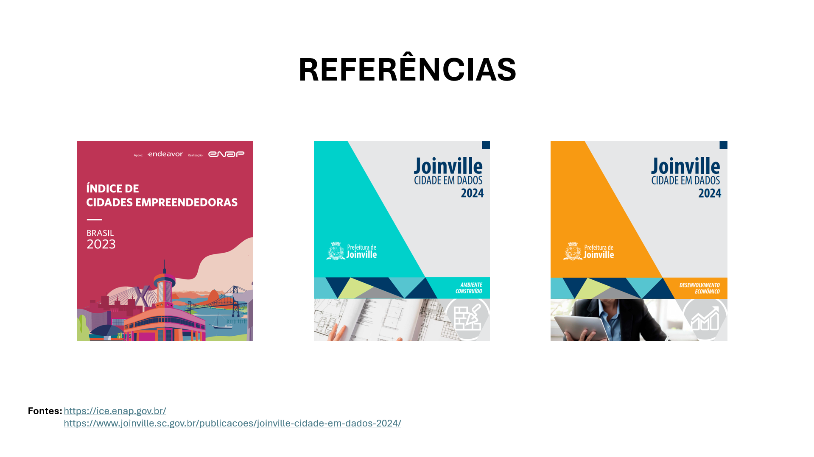
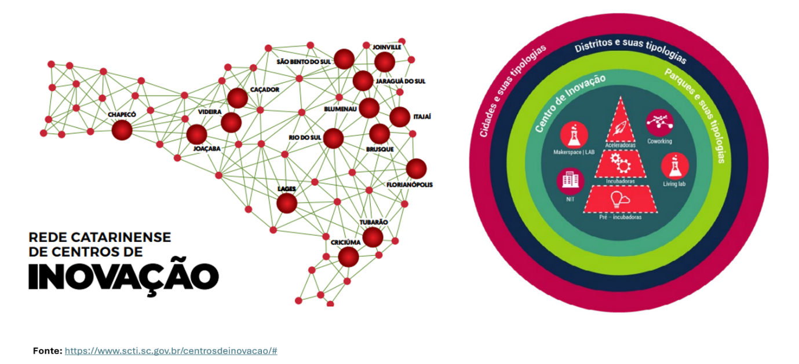
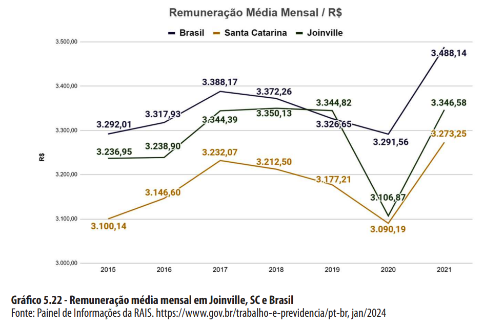
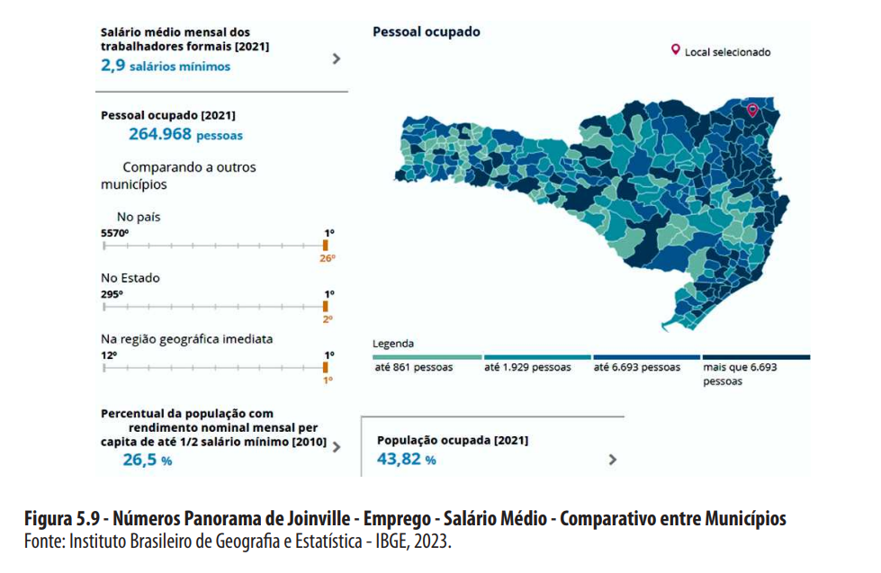
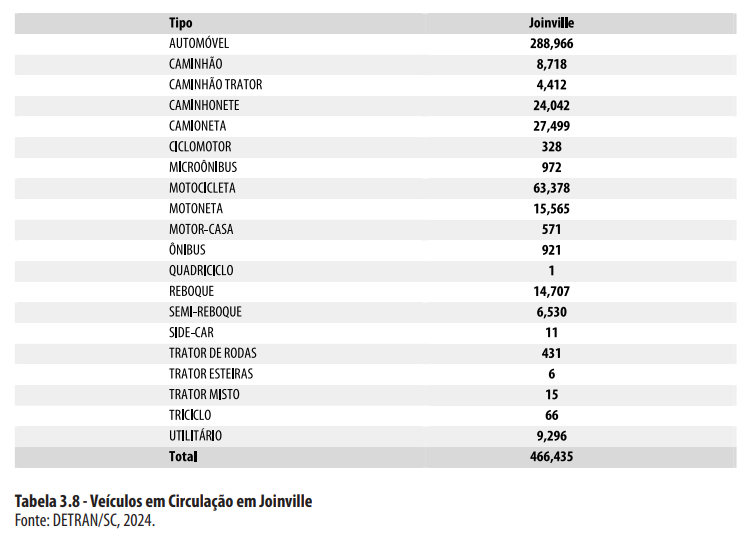
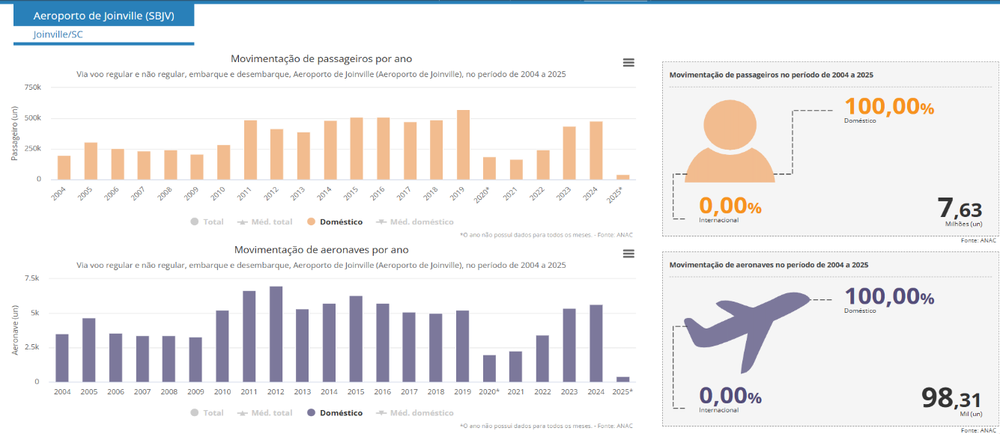
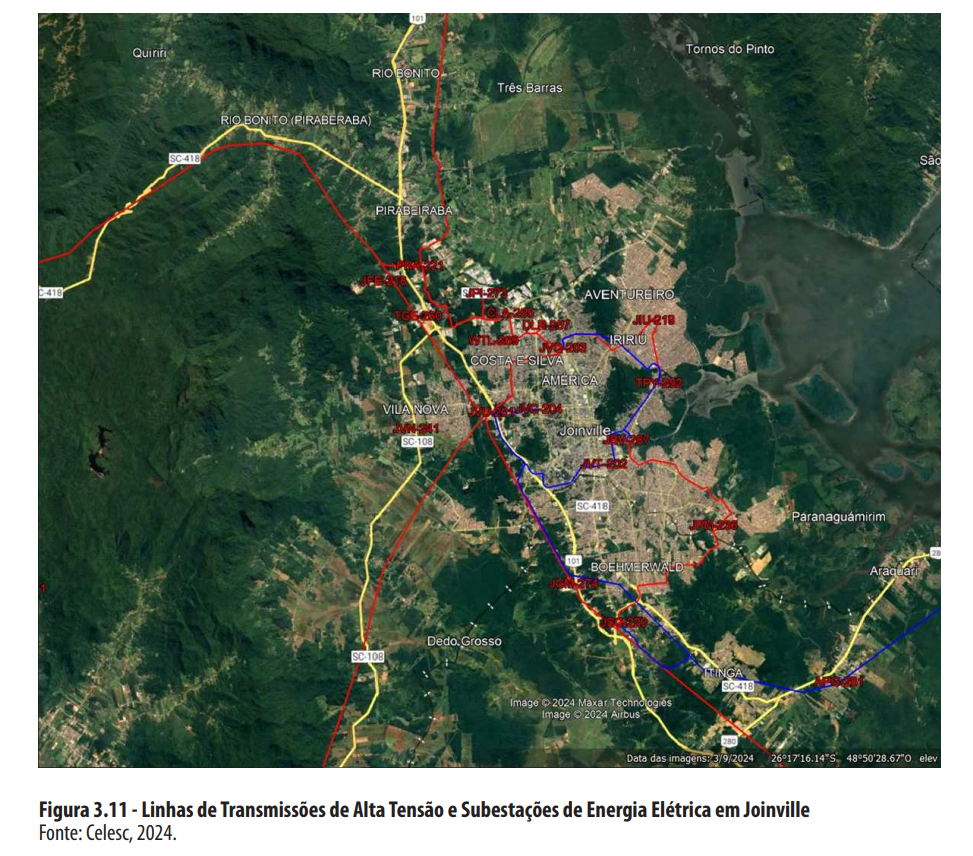
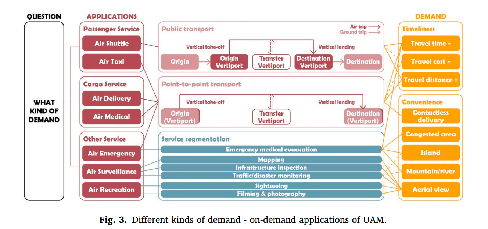

-
Cidade escolhida: Joinville-SC
-
Critérios de Escolha
 Figura 1: Índice de Cidades Empreendedoras ENAP, 2023[1].
Figura 1: Índice de Cidades Empreendedoras ENAP, 2023[1].
- Inovação;
- Porte do município;
- Dados da Cidade
 Figura 2: Referências de Joinville, 2023[1] e 2024[2].
- Destaques dos Dados
4.1 Cultura de Inovação
 Figura 3: Índice de Cidades Empreendedoras ENAP, 2023[1].
- Centros de Inovação;
- Starups (modelos de negócio);
- Aceitação social.
4.2 Aspectos Demográficos, Socioeconômicos e Culturais
Cidade estratégica localizada no norte de Santa Catarina, destacando-se como um importante polo industrial e econômico do estado. Conhecida como a "Cidade das Flores" devido à sua rica flora, Joinville é um dos principais centros industriais do Brasil, com forte presemça nos setores metalúrgico, têxtil e de tecnologia.
Sua localização próxima à cidade de Curitiba (capital estadual) e ao litoral catarinense (polo turístico), aliada à diversidade de setores econômicos, faz de Joinville uma cidade vibrante, com forte crescimento e grande influência na economia regional e nacional.
Destaques da Cidade - Infraestrutura moderna e bem desenvolvida; - Alto índice de qualidade de vida; - Centro industrial e logístico de grande relevância; - Cultura rica.
Dados Gerais
- Área Territorial: 1.127,947 km² (IBGE)
- População (IBGE 2022): 616.317 habitantes
- Densidade demográfica: 546,41 hab/km²
- PIB per capta: R$ 74.532,00
- Renda média: R$ 3.488,14
 Figura 3: Divisão Territorial, ENAP 2023[1].
Figura 3: Divisão Territorial, ENAP 2023[1].
 Figura 4: Remuneração Média Mensal, 2023[1].
 Figura 5: Índice de Cidades Empreendedoras ENAP, 2023[1].
4.3 Transporte Multimodal
Rodoviário
 Figura 6: Índice de Cidades Empreendedoras ENAP, 2023[1].
Figura 6: Índice de Cidades Empreendedoras ENAP, 2023[1].
 Figura 7: Índice de Cidades Empreendedoras ENAP, 2023[1].
 Figura 8: Índice de Cidades Empreendedoras ENAP, 2023[1].
Figura 8: Índice de Cidades Empreendedoras ENAP, 2023[1].
Aéreo - Aeroporto Lauro Carneiro de Loyola
 Figura 9: Índice de Cidades Empreendedoras ENAP, 2023[1].
Aproximadamente 5 mil movimentos de aeronaves anuais. UAM como gerador de demanda (elavação de movimento) de aeronaves. Concessionária como stakeholder e possível parceira.
Portuário 5 portos distando a menos de 125Km:
-
Porto de Navegantes - distância: 88 km
-
Porto de Itajaí - distância: 93 km
-
Porto de Itapoá - distância: 79 km
-
Porto de São Francisco do Sul - distância: 61 km
-
Porto de Paranaguá - distância: 125 km
Por bicicleta
 Figura 1: Índice de Cidades Empreendedoras ENAP, 2023[1].
Figura 1: Índice de Cidades Empreendedoras ENAP, 2023[1].
Extensa malha de ciclovias.
Ferroviário
A ferrovia que passa pelo limite municipal de Joinville liga a região do porto em São Francisco do Sul à cidade de Mafra. Nesta cidade há conexão ferroviária à malha nacional para Porto Alegre, São Paulo e todo Paraná. A carga transportada inclui farelo de soja, trigo, sucata, cerâmica e bentonita, soja, óleo degomado, sorgo, aveia, milho, fertilizantes, minério de ferro, bobina de aço, ferro gusa e refrigeradores. É necessário aprofundar informações para compreender as associações com o UAM.
4.4 Capacidade de Distribuição Elétrica
 Figura 1: Índice de Cidades Empreendedoras ENAP, 2023[1].
- Distribuição estável, com baixo índice de interrupção;
- Investimento para expansão da distribuição de matriz fotovoltaica.
- Alinhamento UAM
Identificar possíveis aplicações UAM em Joinville, segundo a literatura disponível.
 Figura 1: Índice de Cidades Empreendedoras ENAP, 2023[1].
Figura 1: Índice de Cidades Empreendedoras ENAP, 2023[1].
 Figura 1: Índice de Cidades Empreendedoras ENAP, 2023[1].
Figura 1: Índice de Cidades Empreendedoras ENAP, 2023[1].
 Figura 1: Índice de Cidades Empreendedoras ENAP, 2023[1].